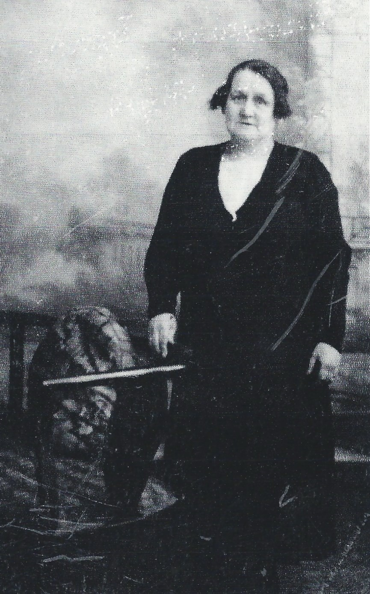
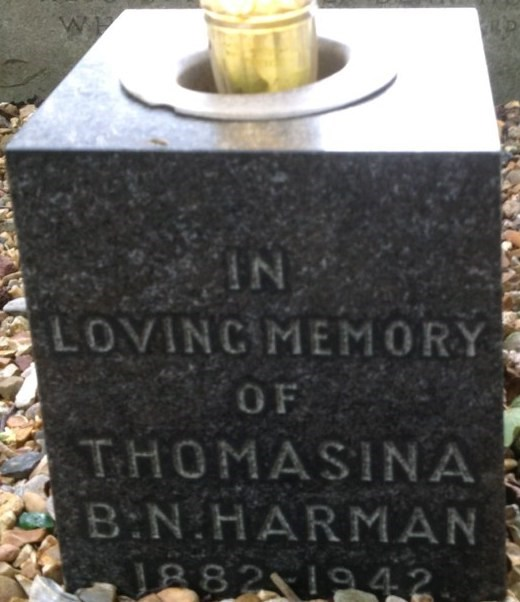

Thomasina Harman (née Myers) 1881 - c1942
[ Home ] | [ Calendar ] | [ Surnames Index ] | [ Errors ] | [ Family History ]The child of Henry Myers (a steamboat man) and Martha Adamson, Thomasina Myers was born in North Shields, Tyne and Wear, England on 30 Mar 18811,2,3,4. She married James Harman at St. Peter's Church, Chirton, Tyne and Wear, England on 31 Mar 19015.
During her life, she was living at 2 South Street in North Shields on 3 Apr 18811; and at 7 Mount Pleasant, Tynemouth, Tyne and Wear on 29 Sept 19392.
She died c. Feb 1942 in Tynemouth, Tyne and Wear, England3,4 and was buried at Preston Cemetery, Walton Avenue in North Shields after 1 Feb 1942.
Parents
- Henry Briscoe Nicholson was born c. Feb 1856
- Martha Sarah was born on 22 Mar 1855
Citations
- 1881 England, Wales & Scotland Census - Findmypast (was 1 week old and the daughter of the head of the household)
- 1939 Register - Findmypast (was recorded at this address)
- England & Wales deaths 1837-2007 - Findmypast
- England Billion Graves cemetery index - Findmypast
- England & Wales Marriages 1837-2005 - Findmypast
Media
Thomasina Nicholson Myers

Thomasina Myers - Headstone

1881 England, Wales & Scotland Census Transcription - GBC-1881-0023805818
England & Wales marriages 1837-2005 Transcription - BMD-M-1901-1-AZ-000177-335
England Marriages 1538-1973 - R_849486861-2
1939 Register - TNA/R39/2949/2949C/011/11
England & Wales deaths 1837-2007 Transcription - BMD-D-1942-1-AZ-000477-053
England Billion Graves cemetery index Transcription - US-BMD-BILLION-004531527
Family Tree

Map
Generated by ged2site. Last updated on Jul 3, 2024
Known Issues
Parent Henry is listed in the residence for 5 Apr 1891, but this child is not
Parent Martha is listed in the residence for 5 Apr 1891, but this child is not
Burial place (North Shields, Tyne and Wear, England) has no citations
Can't find relationship with the home person
Listed in the residence for 29 Sep 1939, but spouse James Harman is not
Adding date of burial as 'aft abt Feb 1942'